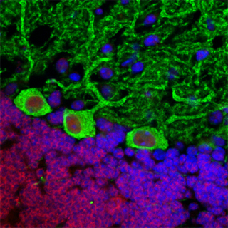
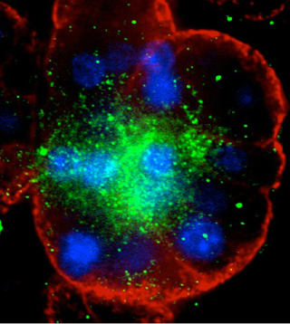
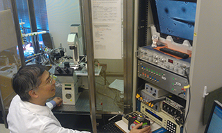

J. Kevin Foskett, PhD
Isaac Ott Professor
Chair of Physiology
- - -
700D Clinical Research Building
415 Curie Boulevard
Philadelphia, PA 19104
215-898-1354
Lab: 215-898-0468
Fax: 215-573-2273
foskett@pennmedicine.upenn.edu
- - -
Executive Assistant:
Rosalyn Schorr
Phone: 215-898-4042
rschorr@pennmedicine.upenn.edu
- - -
- - -
Research Plan

Purkinje Cells

Submucosal Gland Acinus

Senior Research Investigator Daniel Mak, PhD showing proper patch clamp technique.
J. Kevin Foskett, PhD
Isaac Ott Professor and Chair of Physiology
Other Perelman School of Medicine Affiliations
Degrees & Education
-
BS, Duke University, 1974
MS, University of South Carolina, 1977
PhD, University of California, Berkeley, 1981
Awards & Honors
National Research Service Award (NRSA), Predoctoral Fellowship, Cancer Research Laboratory, University of California, Berkeley
1980-1981 University of California Regents Fellowship
1981 First Place, University of California, Berkeley representative to Council of Graduate Schools in U.S./University Microfilms International Dissertation Award Competition; Finalist, Council of Graduate Schools in the U.S./University Microfilms International Dissertation Award
1982 NIH Postdoctoral Award, NHLB Institute, Laboratory of Kidney and Electrolyte Metabolism, Bethesda, Maryland
1989-1994 Canadian Cystic Fibrosis Foundation Scholar
1989-1994 Kinsmen Marsha Morton Scholar
1995 Designated Ion Channel Lecturer of the Physiological Society, University College, Cork, Ireland
1996 Honorary Master of Arts, University of Pennsylvania
2010 Jane M. Glick Graduate Student Teaching Award, Univ Pennsylvania
2011-2021 MERIT AWARD, National Inst. General Medical Sciences, NIH
2013 Stanley N. Cohen Biomedical Research Award, Univ Pennsylvania
2013-present Fellow, American Association for the Advancement of Science (AAAS)
Professional Affiliations
Society of General Physiologists
American Physiological Society
Biophysical Society
American Association for the Advancement of Science
Research Description
The Foskett lab is interested, most generally, in membrane transport and cell signaling. The techniques we employ in the lab span the spectrum from biophysical to molecular. Biochemical and molecular tools are used within the context of physiological measurement, with the goal to understand how molecular behavior results in complex cell physiological processes in normal and disease states. We employ electrophysiology, including single ion channel patch clamping and two-electrode voltage clamping; digital low light-level fluorescence imaging microscopy of single living cells; micro-injection; yeast 2-hybrid system to examine and discover protein interactions; recombinant protein expression; molecular biology; and biochemistry.
The inositol trisphosphate receptor Ca2+ release ion channel A focus of the lab is the molecular physiology of intracellular signaling by Ca2+, with a particular focus on unique approaches for studying the properties and regulation of intracellular Ca2+ release channels, especially inositol trisphosphate receptors (InsP3R), and their roles in normal and pathological cell physiological states. The InsP3Rs are a family of proteins expressed in all cells, that participate in generating Ca2+ signals that can be manifested as highly localized subcellular events or more globally throughout cells, often as highly complex signals with exquisite patterns generated in both space and time. These signals participate in normal cell physiological processes, including mitosis, motility, secretion and gene transcription, and in pathological states, including epilepsy, Alzheimer's disease and programmed cell death (apoptosis). We have developed novel techniques to study the properties of single InsP3R ion channels, and we have developed expression systems to enable the study of recombinant isoforms. An important thrust in the lab has been to relate the behaviors of the channels to the properties of the cytoplasmic Ca2+ signals that they generate, and to understand how these signals regulate important physiological and pathological processes. Our laboratory is internationally recognized as a leader in the biophysics and cell biology of the InsP3R Ca2+ release channel and protein interactions with it. This work has led us into studies of the molecular mechanisms of programmed cell death, the genetically-inherited forms of Alzheimer’s disease, and cellular bioenergetics and autophagy with relevance for neurodegenerative diseases and cancer.
InsP3R biophysics: We wish to understand the molecular details involved in the regulation of channel gating activity (Physiol Rev, 2007). Trainees could consider: identifying protein complexes associated with the InsP3R and analyzing the functional implications (mass spectrometry, yeast two-hybrid, electrophysiology); investigating the structure-function relationships of the channel to determine how the channel is regulated and the mechanisms of ion permeation and channel gating (mutagenesis, electrophysiology); examining the effects of posttranslational modifications on ion channel activity (electrophysiology).
Programmed cell death: We discovered that anti-apoptotic Bcl-2 proteins interact with the InsP3R to enhance its activity, promoting more efficient Ca2+ release as a cell survival signal that provides protection against apoptotic stresses (Nature Cell Biology, 2005). We have been using various biochemical and electrophysiological approaches to identify the nature of the interaction. Students could consider: Characterizing the biochemical interaction determinants in the InsP3R and Bcl-xL (mutagenesis, expression, electrophysiology); determining the physiological relevance of the Bcl-xL-InsP3R interaction, by determining if specific disruption of the Bcl-xL-InsP3R interaction enhances apoptosis of cancer cells.
Mitochondrial Ca2+ uniporter:This discovery of the critical role of endoplasmic reticulum to mitochondria Ca2+ transfer has led us to a new focus on the mechanisms of mitochondrial Ca2+ uptake. We discovered an essential function of MICU1 as a gatekeeper that prevents mitochondrial Ca2+ overload under basal conditions (Cell, 2012), and we have discovered MCUR1 as a novel component of the mitochondrial Ca2+ influx Ca2+ channel whose expression is essential for function of the MCU uniporter channel (Nature Cell Biology, 2012). Trainees could: determine the molecular components of the Ca2+ uniporter Ca2+ channel and their stoichiometry (biochemistry, imaging, mass spectrometry, yeast two hybrid); record Ca2+ uniporter currents to determine the biophysical properties of this channel (electrophysiology); record Ca2+ uniporter currents to understand uniporter regulation by components of the uniporter complex (electrophysiology, mutagenesis).
Alzheimer’s disease:We found that mutant presenilins that cause early onset Familial Alzheimer’s disease (FAD) physically interact with the InsP3R and change its gating properties (Neuron, 2008). This gain-of-function effect is the earliest phenotype observed in mouse models of FAD (Science Signaling, 2010; PNAS, 2011). We created novel mouse models to evaluate the role of this effect on Ca2+ signaling on the pathogenesis of FAD. Genetic restoration of the activity of the InsP3R rescued learning and memory deficits, and profoundly reduced amyloid deposition, suggesting that exaggerated Ca2+ signaling induced by mutant presenilins contributes importantly to AD (J Neurosci, 2014). Trainess could: screen for compounds to interrupt exaggerated Ca2+ signaling and test their efficacy in reducing AD symptoms; determine the mechanisms by which Ca2+ signaling impinges upon amyloid production; evaluate the effects of amyloid on Ca2+ signaling mechanisms.
Lung submucosal gland physiology (cystic fibrosis (CF)):We have had long standing interest in exocrine epithelial ion and water transport mechanisms and their regulation, with a particular focus on the genetic disease cystic fibrosis, and have published extensively on various aspects of the biophysics and cell biology of the CF gene product, the CFTR ion channel, and the cell biology of lung submucosal gland secretion. Defects in submucosal gland secretion may be the underlying defect that results in lung deterioration in CF. Most recently, we discovered that human lung submucosal glands require Ca2+ release to secrete fluid and anti-microbial peptides, and that mechanisms exist in these cells that could enable released Ca2+ to overcome the secretory defect in CF (J Clin Invest 2010). Trainees could: determine the source of released Ca2+; determine which InsP3R isoforms are expressed in serous acinar cells (live cell imaging); determine if InsP3R are phosphorylated in vivo in response to cAMP stimulation (protein biochemistry); determine if cAMP enhancement of Ca2+ signaling can be enhanced by factors in serum or inflammatory mediators (live cell imaging); define mechanisms to sensitize InsP3R Ca2+ release to endogenous ligands (high throughput screening); evaluate the efficacy of small molecules to sensitize alternative ion channels to cAMP-induced Ca2+ signals.
CALHM ion channels and the physiology of taste We discovered CALHM1 as a novel pore-forming subunit of an ion channel (PNAS, 2012) that has structural similarities to connexins and pannexins by convergent evolution (JBC, 2013). We found that CALHM1 is expressed in type II taste cells in taste buds where it mediates ATP release as an essential mechanism that transduces peripheral detection of sweet, bitter and umami taste molecules into taste perception by the central nervous system (Nature, 2013). Trainees could: determine the physiological relevance of CALHM1 in ATP release in taste perception (electrophysiology, live cell imaging); define functions of CALHM1 interacting proteins in in taste perception (electrophysiology, live cell imaging, expression, biochemistry); define the mechanism of voltage activation of CALHM channels in taste perception (electrophysiology).
Click here for a full list of publications.
(searches the National Library of Medicine's PubMed database.)